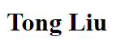

Do some research that's both interesting and meaningful to me.
PhD student
Ludwig Maximilian University of Munich (LMU)
Munich, Germany
Publications
3. [LLMs] [Psycholinguistics] Tong Liu, Iza Škrjanec, Vera Demberg. “Temperature-scaling surprisal estimates improve fit to human reading times – but does it do so for the “right reasons”?”. Association for Computational Linguistics (ACL), 2024, to appear.
2. [Graph] [Calibration] Tong Liu*, Yushan Liu*, Marcel Hildebrandt, Mitchell Joblin, Hang Li, Volker Tresp. “On Calibration of Graph Neural Networks for Node Classification”. International Joint Conference on Neural Networks (IJCNN), 2022.
1. [HEP] [Higgs] Hao Sun, Xuan Luo, Wei Wei, and Tong Liu. “Searching for the doubly-charged Higgs bosons in the Georgi-Machacek model at the electron-proton colliders”. Physical Review D (PRD), 2017.